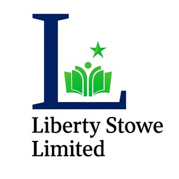

Trade Mark Journal No.2025/047 21 November 2025
UK00004287684 1 November 2025 (9,16,35,41)

- Class 9
- Downloadable educational course materials; Training software; Education software; Downloadable computer software for the management of information; Content management software; Downloadable educational media; Downloadable computer software for the management of data; Downloadable mobile applications for the management of information; Educational software.
- Class 16
- Printed training materials; Printed educational materials.
- Class 35
- Retail services in relation to downloadable electronic publications.
- Class 41
- Educational and training services; Instructional and training services; Training services concerned with the use of computer software; Educational services relating to sales training; Education services relating to the application of computer software; Providing electronic publications relating to language training, not downloadable; Training services in the field of computer software development; Education services relating to computer software; Educational and training services relating to games; Training and education services; Education and training services; Training courses relating to computer software; Education services relating to the training of personnel in food technology; Consultancy services relating to the development of training courses; Education services relating to business training; Training services relating to computer programs; Training services relating to computer-aided design; Training services relating to design; Courses (Training -) relating to customer services; Training services relating to retail marketing; Educational and training services relating to healthcare; Educational services for providing courses of education; Educational services for providing courses of instruction; Multimedia entertainment software publishing services; Training services relating to the use of information technology; Online education services; Educational and training services relating to sport; Consultancy services relating to the education and training of management and of personnel; Training services; Training services relating to computer systems; Provision of training courses in personal development; Services for the provision of training in the use of computer keyboards; Training services for audio engineers; Teacher training services; Educational services for teaching transcription techniques; Personal training services; Practical training services; Development of educational materials; Educational services in the nature of coaching; Providing non-downloadable electronic publications relating to language training; Training services relating to retail management; Services for the provision of training in the use of computers; Training services relating to computer-aided engineering design; Management training services; Educational certification services, namely, providing training and educational examination; Training services related to business; Education services relating to design; Provision of online training; Educational services for teaching manual writing; Commercial training services; Education services relating to vocational training; Provision of training services for business; Educational establishments providing courses of instruction (Services of -); Educational and teaching services; Production of video tapes for corporate use in management educational training; Linguistic education and training services; Coaching [training]; Life coaching (training); Coaching; Personal coaching [training]; Training or education services in the field of life coaching; Education, teaching and training; Education and training; Career counselling and coaching; Education and training consultancy; Sports tuition, coaching and instruction; Career counselling [training and education advice]; Coaching services; Career counselling relating to education and training; Career and vocational training; Vocational education and training services; Vocational training; Training of teachers; Career advisory services (education or training advice); Provision of training and education; Provision of education and training; Training and further training consultancy; Vocational skills training; Computerised training in career counselling; Training consultancy; Vocational training services; Employment training; Training and instruction; Training courses; Organisation of training courses; Training in the field of business management; Management training consultancy services; Postgraduate training courses; Business training services; Organisation of training; Education services for managerial staff; Adult training; Training services for personnel; Career information and advisory services (educational and training advice); Training courses (Provision of -); Provision of training courses; Courses (Training -) relating to banking; Coaching relating to finance; Provision of training courses for young people in preparation for careers; Courses (Training -) relating to research and development; Providing online training seminars; Provision of training courses for young people in preparation for employment; Arranging of training courses; Postgraduate training courses relating to management studies; Business training consultancy services; Conducting training courses relating to nutrition online; Courses (Training -) relating to accountancy.
Liberty Stowe Limited